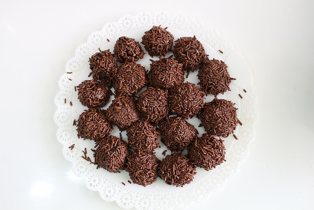

Home
Brigadeiro

Description
The brigadeiro is a beloved Brazilian sweet treat, often considered the country’s most iconic dessert. Made from a simple mixture of condensed milk, cocoa powder, butter, and chocolate sprinkles, it has a smooth, fudgy texture that melts in your mouth. The mixture is cooked until thickened, then rolled into small balls and coated with sprinkles, giving it a rich, chocolatey flavor with a hint of caramel sweetness. Its simplicity and irresistible taste make it a favorite at celebrations and family gatherings.
Beyond its ingredients, the brigadeiro holds a special place in Brazilian culture. It’s a symbol of joy, affection, and shared moments — a must-have at birthday parties and festive occasions. Whether served in tiny paper cups, spooned from a jar, or reinvented in gourmet versions, the brigadeiro captures the essence of Brazilian hospitality and love for sweets, uniting generations around one bite of happiness.
Ingredients
- 1 can (about 395 g / 14 oz) of sweetened condensed milk
- 2 tablespoons of unsweetened cocoa powder (or chocolate powder)
- 1 tablespoon of butter
- Chocolate sprinkles (for rolling)
Preparation
- Mix the ingredients:
- In a medium saucepan, add the condensed milk, cocoa powder, and butter.
- Stir well until the cocoa powder is fully dissolved and the mixture is smooth.
- Cook the mixture:
- Place the pan over medium heat and cook, stirring constantly with a wooden spoon or spatula.
- Keep stirring for about 8 to 10 minutes, until the mixture thickens and starts to pull away from the bottom of the pan.
- Let it cool:
- Remove from heat and transfer the mixture to a greased plate or bowl.
- Let it cool to room temperature (or refrigerate it for faster cooling).
- Shape the brigadeiros:
- Grease your hands lightly with butter.
- Take small portions of the cooled mixture and roll them into balls (about the size of a cherry or small walnut).
- Coat with sprinkles:
- Roll each ball in chocolate sprinkles until evenly covered.
- Place them in small paper candy cups for serving.
- Serve and enjoy!
- Brigadeiros can be served at room temperature or slightly chilled — perfect for parties or as a sweet treat anytime.